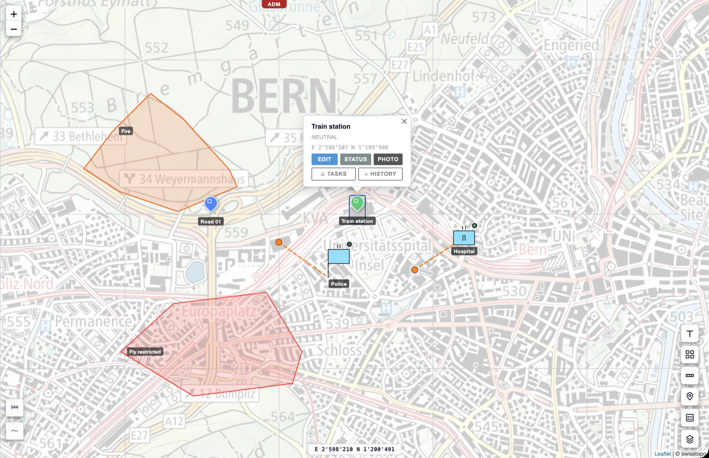
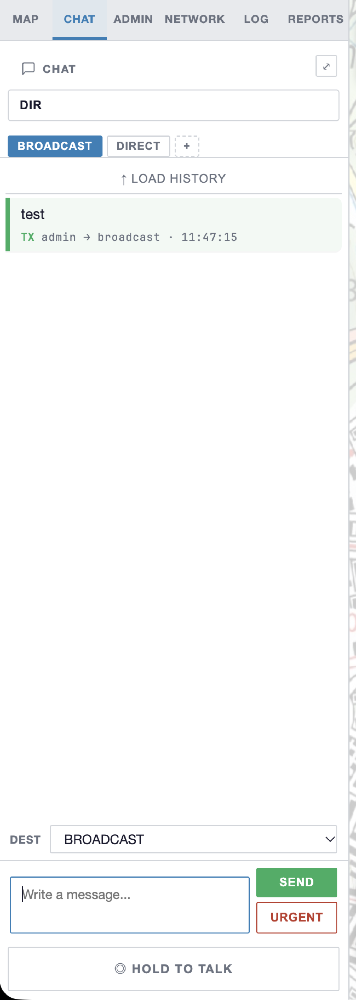
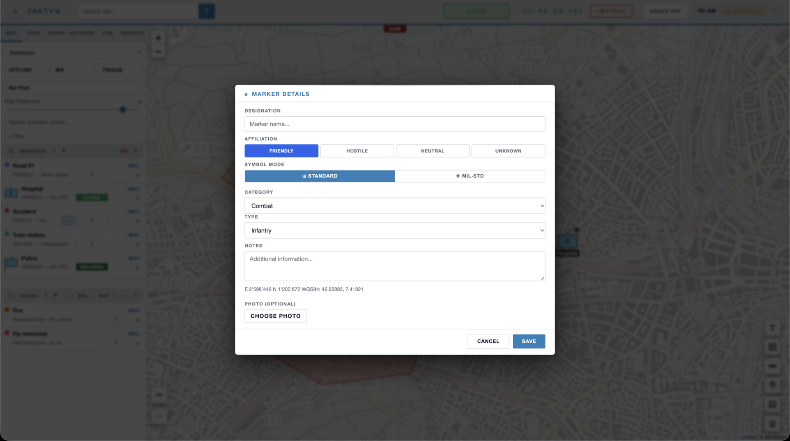
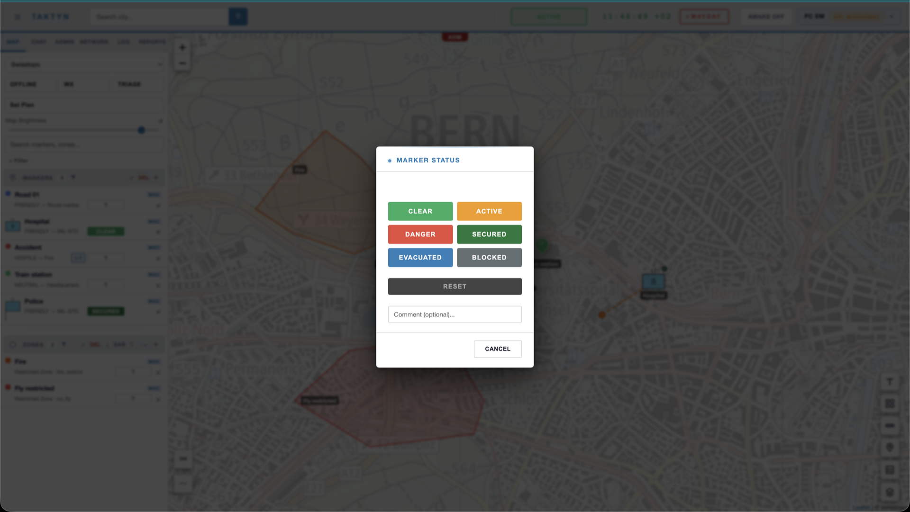
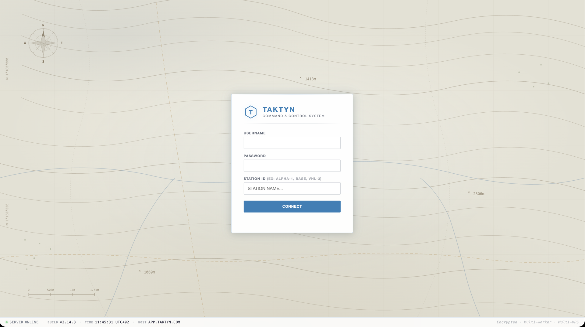
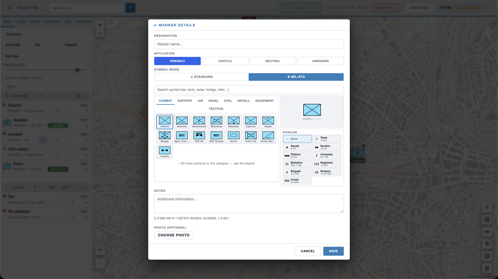
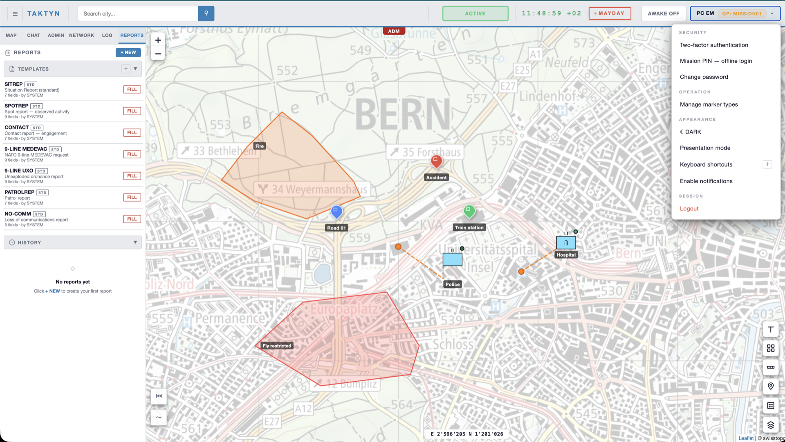
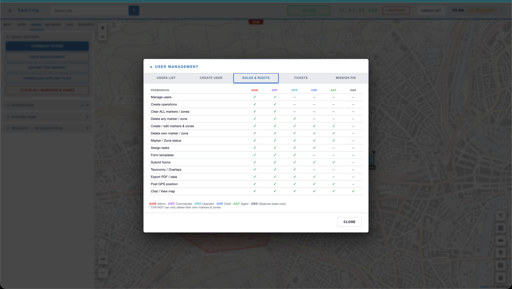

Field coordination,
in
real time.
Shared tactical map, end-to-end encrypted chat, off-grid radio. TAKTYN brings your coordination tools into a single platform — and keeps working even without internet.
Field coordination is still scattered.
- Standard radio — no map, no traceability
- Consumer messaging apps — unencrypted
- Spreadsheets / paper — no real-time view
- Team status tracked by voice
- A single command post — one point of failure
- Shared tactical map in real time
- End-to-end encrypted chat, built for professionals
- Positions and zones synced automatically
- Every point's status updated in one click
- Multiple synced command posts — automatic failover
A command post, anywhere.
The app in real conditions.
2-minute demo and interface captures — command post, tactical map, operator chat.







Security by design.
Nine layers of protection, from the radio to message encryption.
- Network — proxy/CDN, HTTPS TLS 1.3
- Authentication — strong password + brute-force lockout
- Two-factor — TOTP and hardware keys (YubiKey, WebAuthn)
- Offline login — mission token sealed by a local PIN, remotely revocable
- Transport — AES-256 encryption in real time
- Storage — encrypted database SQLCipher AES-256
- Radio — AES-256-CTR, Meshtastic firmware
- Chat — end-to-end AES-256-GCM encryption
- Infrastructure — server and database isolated per client
Hosted on Infomaniak infrastructure, datacenters in Geneva and Winterthur. No client data ever leaves Switzerland.
No network? Still coordinated.
For remote areas — mountains, large events, disaster zones — TAKTYN runs from a compact on-site unit, with its own WiFi and radio relay. Automatic resync as soon as connectivity returns.
Built for the field.
From first contact to deployment.
Free demo
30–45 minutes, no commitment.
Field pilot
30 days under real conditions, deductible from the contract.
Deployment
Dedicated, isolated infrastructure, provisioned for you.
Founding access.
- Full application — map, encrypted chat, off-grid radio
- Dedicated infrastructure, hosted in Switzerland
- Direct support for the entire duration of the program
- Terms and pricing tailored to your team, worked out together
Let's talk about your field.
Describe your activity and your coordination needs — reply within a few days.